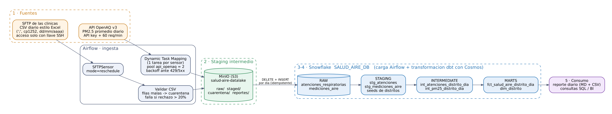

Un área de salud pública de Lima Metropolitana necesita saber cada mañana en qué distritos la mala calidad del aire coincide con un aumento de atenciones por enfermedades respiratorias, para reforzar personal y lanzar campañas preventivas dirigidas a menores de 5 años y adultos mayores. Hoy esa información está en dos lugares que no se hablan: los archivos diarios de la red de clínicas y las mediciones de PM2.5 de las estaciones de monitoreo.
El pipeline cruza ambas fuentes por distrito (ubigeo) y día y entrega una tabla con atenciones, PM2.5 de 24 h, su categoría frente a la guía OMS (15 µg/m³) y al ECA Perú (50 µg/m³), la variación frente a los 7 días previos y una bandera de alerta (aire sobre la guía OMS y atenciones ≥ 20 % sobre su promedio), además de un reporte diario.

pipeline_salud_aire (06:00, catchup=False).| Fuente | Origen y "imperfecciones" | Cómo se maneja |
|---|---|---|
| Atenciones respiratorias | CSV diario de la red de clínicas en un SFTP (llave SSH). Export de Excel: ;, Windows-1252,
fechas dd/mm/aaaa, N/D, negativos, reenvíos, distritos escritos de varias formas; puede llegar tarde. |
SFTPSensor en reschedule (timeout 3 h); validación con cuarentena y umbral de rechazo
del 20 %; normalización y deduplicación en dbt. Proveedor simulado por un DAG aparte (enunciado §12). |
| Calidad del aire | API pública OpenAQ v3: API key, límite de 60 req/min y 2 000 req/h, HTTP 429, estaciones que se apagan. | Dynamic Task Mapping (1 tarea por sensor) limitado por el pool api_openaq (2 slots);
backoff que respeta Retry-After; sin reintento ante 401/403. |
| Decisión | Por qué |
|---|---|
| ¿Por qué estas fuentes? | Son las dos mitades de la pregunta de negocio y representan dos tipos de origen reales (archivo por transferencia + API con límites). La clave común no viene dada: hay que construirla (texto libre → ubigeo; coordenadas → estación más cercana). |
| Validación en 2 niveles | Python valida la estructura antes de cargar (un archivo sin columnas falla con un mensaje claro); dbt aplica las reglas de negocio en SQL versionado y testeado. |
| Cuarentena + umbral | Una fila mala no debe frenar el reporte, pero un archivo corrupto no puede pasar en silencio: si se rechaza > 20 %, la tarea falla y alerta. |
| MinIO como staging | Trazabilidad y respaldo: copia fiel del original (raw/), versión validada (staged/) y rechazos (cuarentena/), con reglas de ciclo de vida. Mismo código sirve con AWS S3 (solo cambia la Connection). |
| Carga idempotente | DELETE + INSERT del día en una transacción: reintentos y reprocesos (fecha_proceso) nunca duplican datos. |
| Estación más cercana | HAVERSINE con radio ≤ 10 km y cobertura ≥ 50 %: un promedio de toda Lima borraría la diferencia entre distritos. |
| LocalExecutor + dbt en venv | Un nodo y ~40 tareas diarias: Celery agregaría Redis y un worker (~1 GB RAM) sin beneficio. dbt corre en su propio entorno virtual (Cosmos en modo subproceso) para evitar conflictos de dependencias con Airflow. |
Cadena: stg_atenciones / stg_mediciones_aire → int_atenciones_distrito_dia /
int_pm25_distrito_dia → fct_salud_aire_distrito_dia + dim_distrito, con dos seeds
(distritos_lima, alias_distritos). Cosmos crea una tarea por seed, modelo y test (41 tests).
Los umbrales de negocio son vars de dbt: cambiarlos queda versionado y pasa por PR.
| Test | Severidad | Por qué se priorizó |
|---|---|---|
| Conciliación staging ↔ mart (singular) | error | El riesgo n.º 1 de este modelo son los joins (alias, rejilla distrito × día). Si la suma de atenciones no cuadra exactamente, el reporte no se publica. |
combinacion_unica (genérico propio) | error | Garantiza la clave natural en cada capa (p. ej. fecha + ubigeo en el mart): detecta duplicados por reenvíos o joins. |
relationships distrito → alias | warn + store_failures | Una forma nueva de escribir un distrito (o uno fuera de Lima, como CALLAO) no debe detener la operación, pero queda en AUDITORIA.DISTRITOS_SIN_MAPEAR para agregarla al seed. |
no_negativo, valor_en_rango (propios) | error | Valores físicamente imposibles (atenciones < 0, PM2.5 fuera de 0–1000 µg/m³) indican un problema de origen. |
accepted_values, not_null, unique | error | Dominios de negocio (grupos de edad, categorías de aire, zonas) e integridad de las dimensiones. |
Se escribieron tests genéricos propios en vez de usar dbt_utils para no depender de dbt deps (red) en cada ejecución.
DbtTaskGroup.SFTPSensor en reschedule: no ocupa un slot mientras espera.on_failure_callback, execution_timeout, dagrun_timeout, max_active_runs=1.doc_md en ambos DAGs; owner por tarea (ingenieria_datos, analytics_salud).lint-and-test) en cada PR: ruff → dbt parse → pytest, con credenciales ficticias.main: PR obligatorio y CI en verde..env (ignorado), inyectado como Connections/Variables de Airflow
(AIRFLOW_CONN_*) y leído por dbt con env_var(). El CI falla si se versiona un secreto.INSERT/DELETE en 2 tablas RAW; transformación;
lector de MARTS). En MinIO, un usuario de servicio limitado a un bucket y sin permiso de borrar.Secrets Backend (AWS Secrets Manager o Vault) en lugar de .env; CeleryExecutor o KubernetesExecutor si crece el
volumen; alertas a Slack/Teams desde el callback; mart incremental; host key fijo del SFTP del proveedor; y,
como alternativa gestionada, MWAA, Cloud Composer o Astronomer desplegando la misma imagen que publica el CD.
README.md del repositorio (secciones 3 y 4).